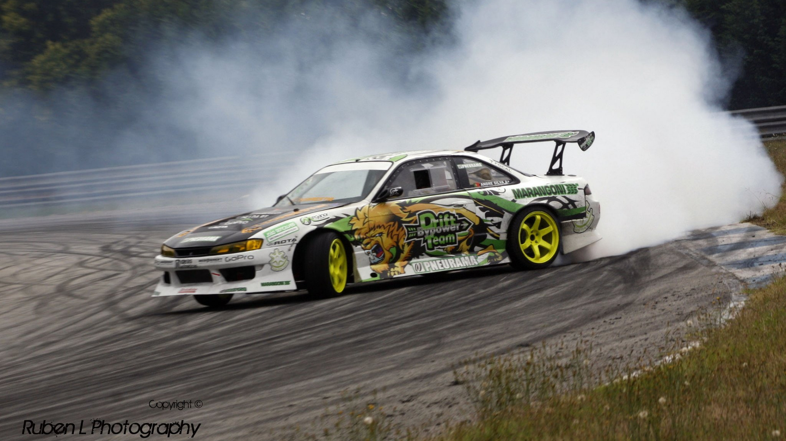
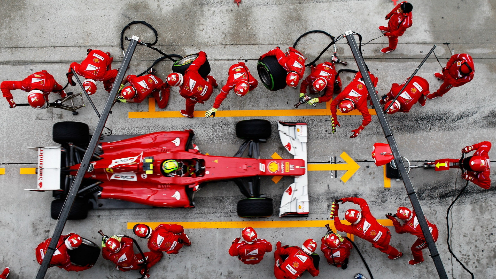
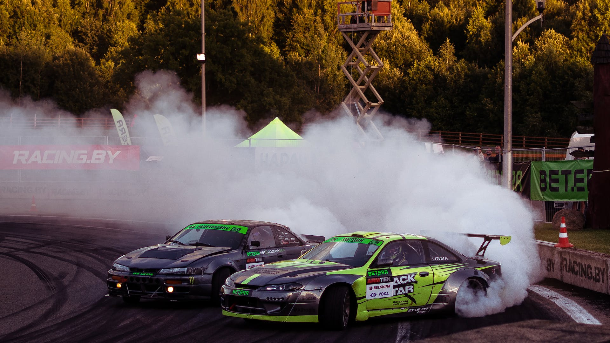
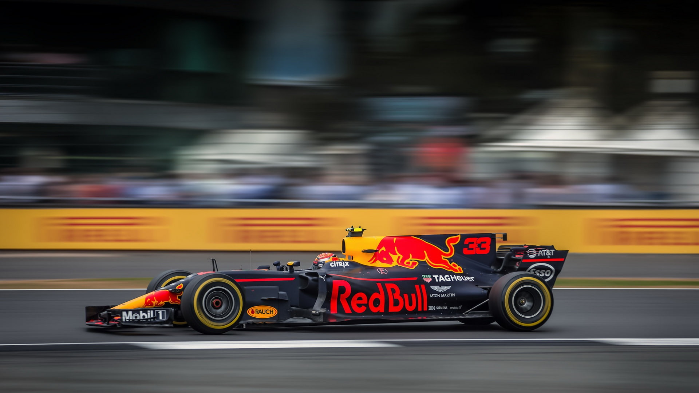
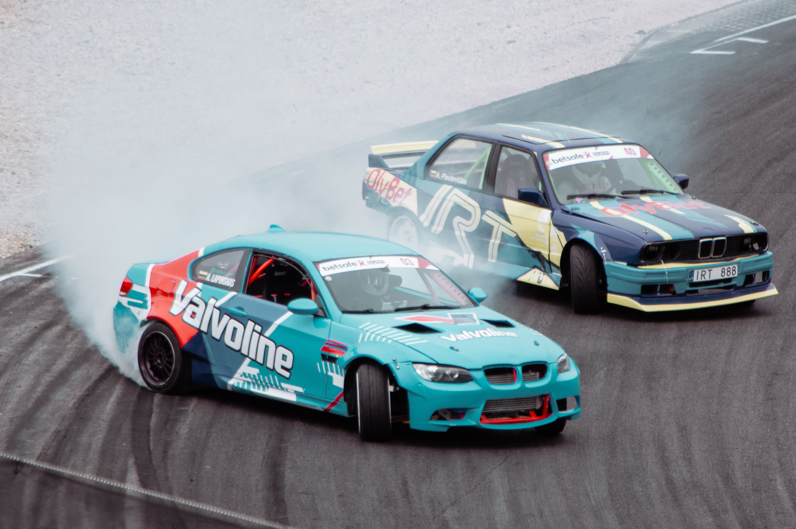
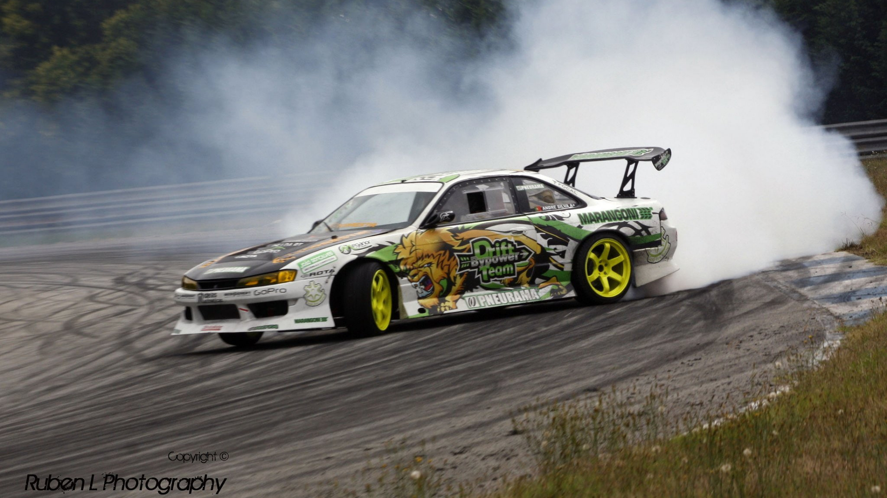
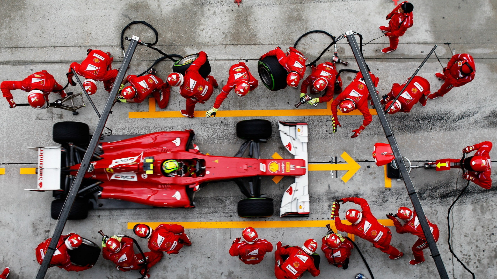
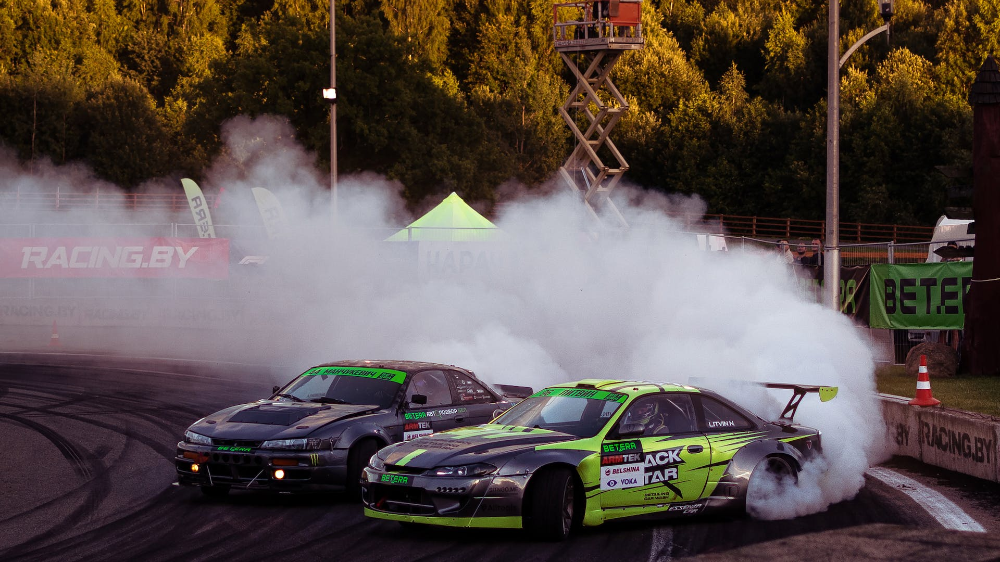
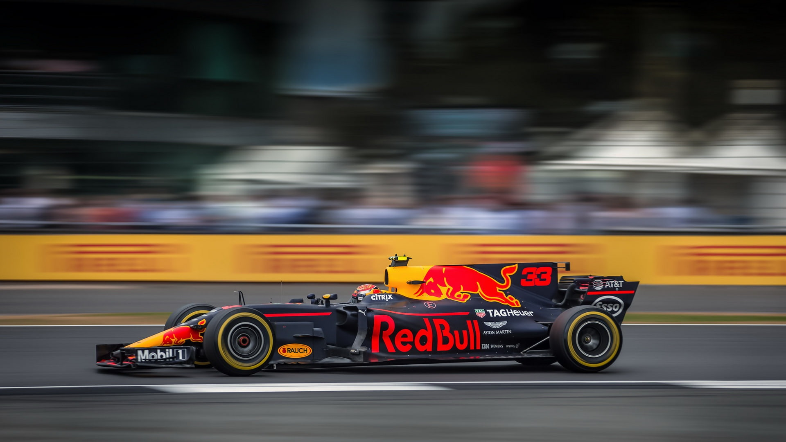
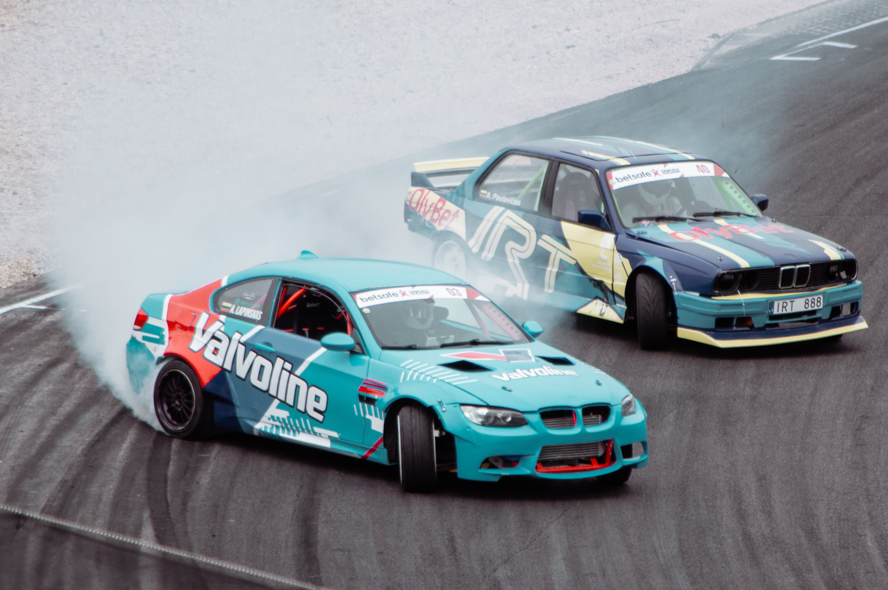

All About Formula Sports
All About Formula Sports
Formula One automobile racing has its roots in the European Grand Prix championships of the 1920s and 1930s, though the foundation of the modern Formula One began in 1946 with the Fédération Internationale de l'Automobile's (FIA) standardisation of rules, which was followed by a World Championship of Drivers in 1950.The sport's history parallels the evolution of its technical regulations. In addition to the world championship series, non-championship Formula One races were held for many years, the last held in 1983 due to the rising cost of competition. National championships existed in South Africa and the United Kingdom in the 1960s and 1970s.
Formula DRIFT was co-founded by Jim Liaw and Ryan Sage in 2003 as a sister company to Slipstream Global Marketing, the same partnership that introduced D1 Grand Prix to the United States. The new entity would solely own, operate and launch the first official drifting series in North America. Formula DRIFT is not affiliated with the FIA series of formula racing championships.Formula DRIFT has 81 licensed drivers competing in PRO and PROSPEC (formerly PRO 2) as of October 2023. The series consists of an eight-round championship played out at race tracks across North America. Formula DRIFT is judged on line, angle, and style, rather than who finishes the course in the fastest time.
 








